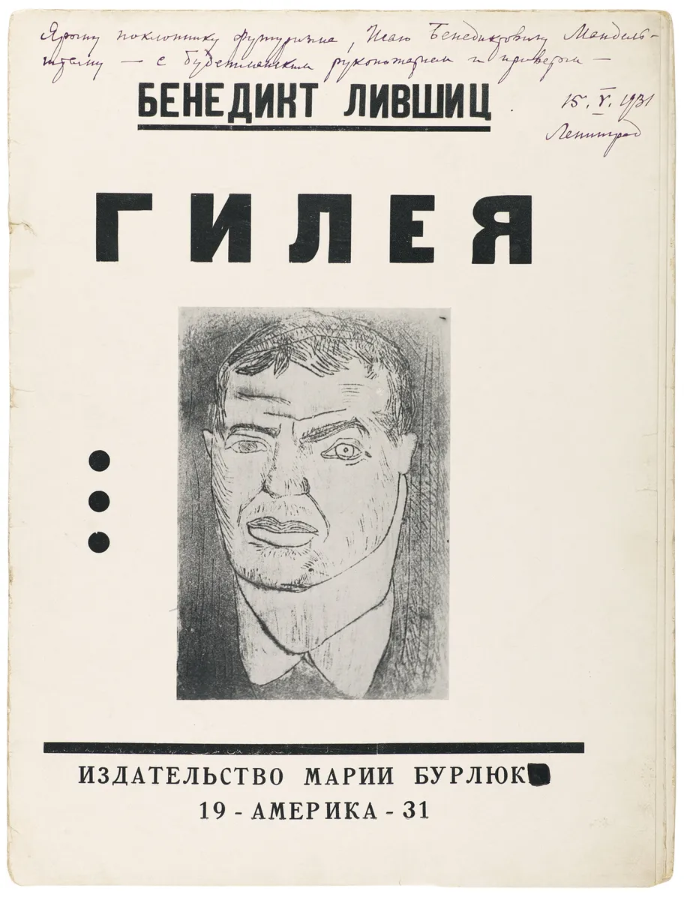
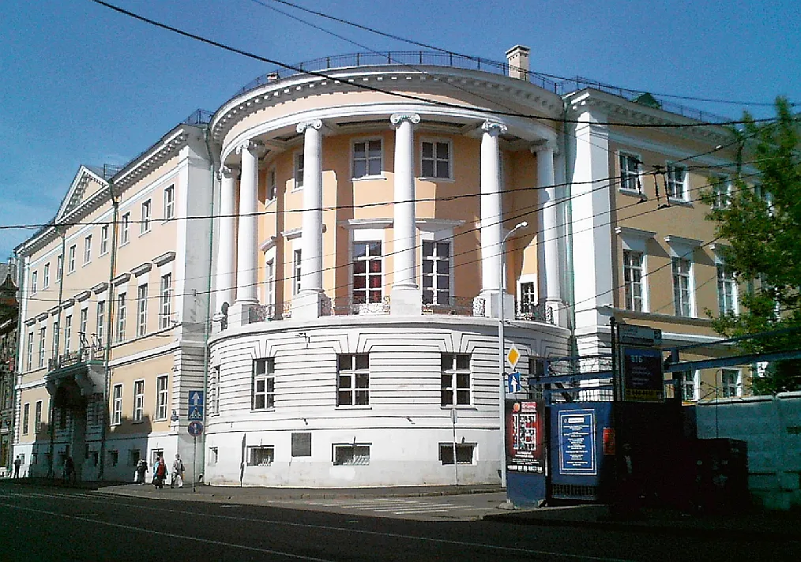

David Bourliouk est né à Semyrotivka près du village de Riabouchky (actuellement dans le district de Lebedyn, oblast de Soumy en Ukraine). De 1898 à 1904, il prend des cours dans les écoles d'art de Kazan et d'Odessa, et à l'Académie Royale de Munich.
Ses débuts artistiques
En 1904 il fréquente l'atelier de Cormon à Paris et en 1907 il effectue un séjour à Moscou et entre en contact avec l'Avant-Garde. En 1908 il organise la première exposition d'avant-gardistes le chaînon et publie son premier manifeste. Il est coauteur du manifeste futuriste russe “Une gifle au goût du public”.

Livre co-écrit par l'artiste
Peintre néo primitiviste futuriste, il étudie à l’Institut de peinture de sculpture et d’architecture de Moscou dont il est renvoyé en 1913.

L'Institut de peinture de Moscou aujourd'hui
De 1913 à 1915 il organise de nombreuses expositions et des conférences autour de l'Avant-garde et en 1917, il participe avec Malévitch et Tatline à la première Soirée Républicaine des Arts.
Figure majeure de l’avant-garde jusqu’en 1915 où il émigre en Oural et passe via la Sibérie, le Japon et le Canada vers les États-Unis où il termine sa vie comme peintre et comme critique d’art. Il meurt à Long Island en 1967.